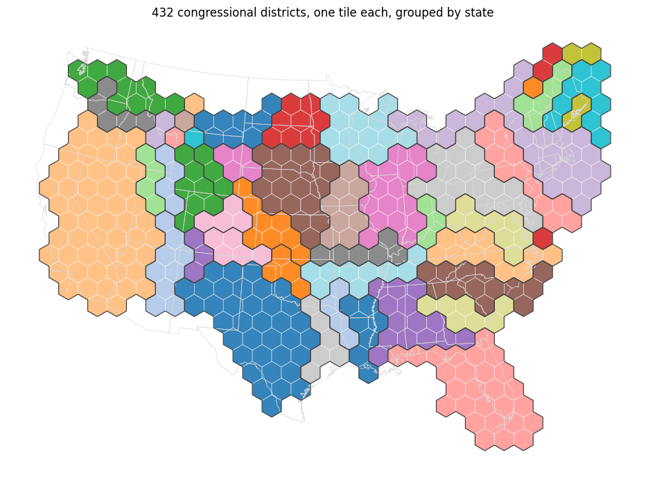
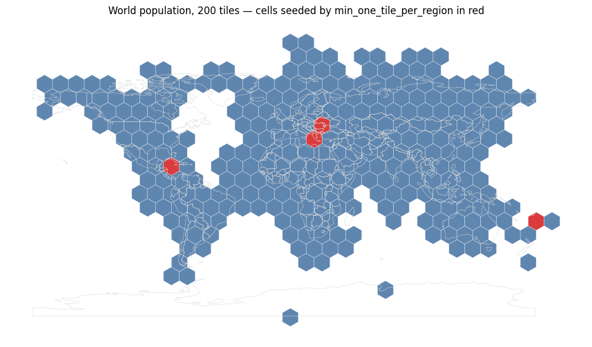
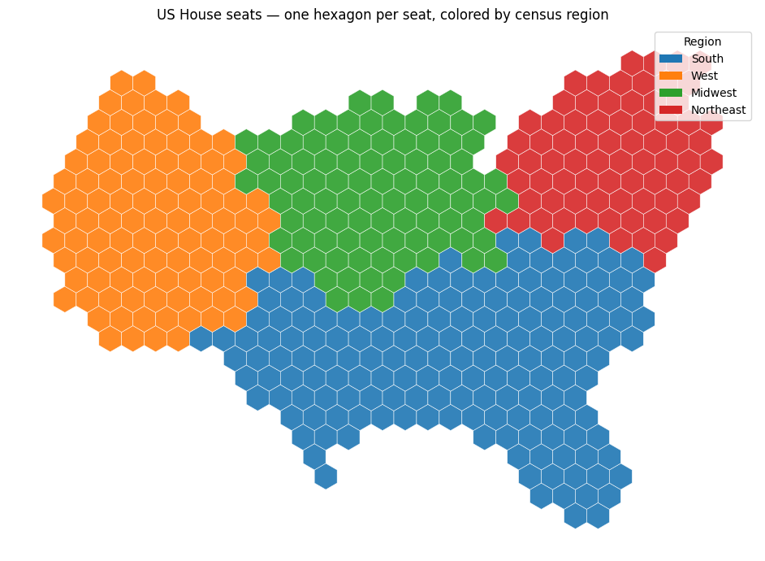
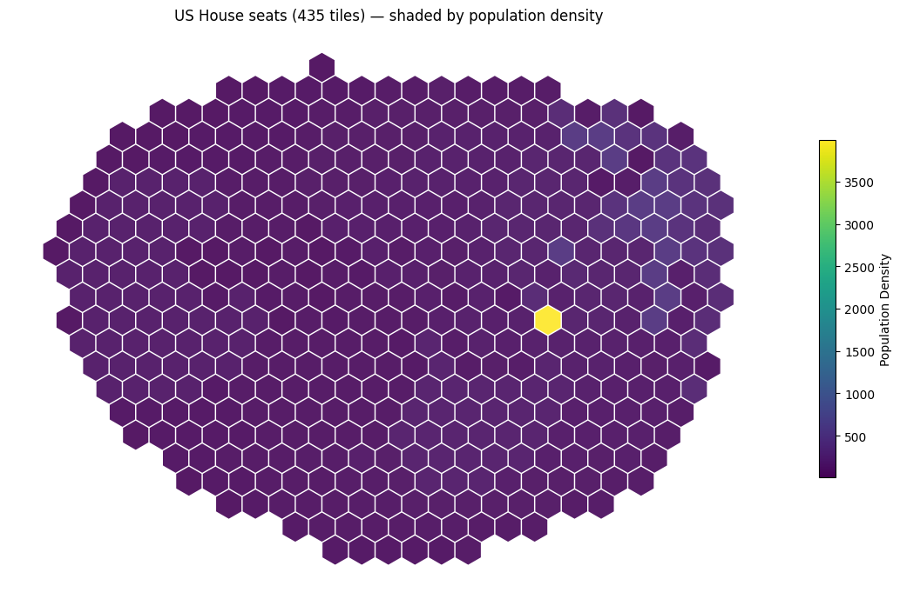
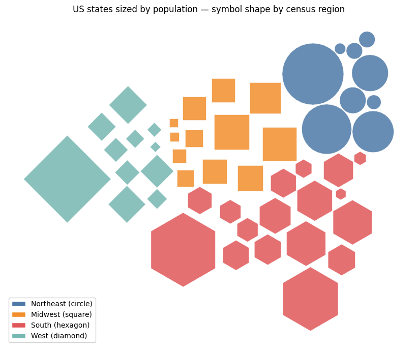
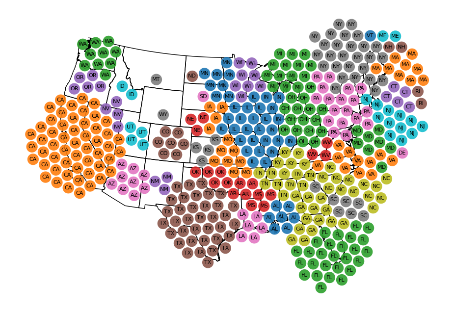

The how-to showed grid, mosaic and circle packing side by side; mosaic is now the spine, three exploratory cells are gone, and min_one_tile_per_region and the missing-region warning are documented for the first time. Compare the old lead figure (a 435-tile grid blob) with the new one.
docs/how-to/tile-count-maps.ipynb.docs/how-to/index.md.SymbolCartogram.to_geodataframe(level="group") insrc/carto_flow/symbol_cartogram/result.py, with a test in tests/test_symbol_cartogram_group_by_support.py.
**result.symbols always carries group_index when tile_count is used.** Mosaic does not set it. MosaicLayout passes the G-level user grouping, which is None unless group_by was given, so to_geodataframe(level="group") raises level='group' requires group_by or tile_count to have been set on a mosaic tile-count result. Grid passes the N-level grouping and does carry it. The rewritten page uses layout.regions_gdf for the tile-count case instead, which is mosaic-native and also reports target_count next to the delivered tile_count.
**to_geodataframe(level="group") returns one row per group with that group's attributes.** The geometry was right; the attributes were not. The join read valid_source.iloc[group_index] — a source *row* index, not a group — so with group_by every group whose first member is not at row group_index was labeled from the wrong region. The old notebook's closing table printed the wrong Region for three of its four rows. With tile_count on grid, group index equals row index, so that path was correct and stays byte-identical. The fix reads the group's lowest original_index.
Two further claims — that grid "treats each tile-count value as a symbol size" and that mosaic is slower — were already corrected on main before this branch.
| before | after | |
|---|---|---|
| notebook runtime (nbclient, cold kernel) | 47.3 s | 13.7 s |
| code cells | 15 | 11 |
| layouts run | packing, grid, mosaic | mosaic |
The 33 s saved is almost all the 500-iteration circle packing on 432 districts. The world tilegram added by the new section costs about 5 s of the remainder.
min_one_tile_per_region demonstrated on a contrived input?No. The library's own test for the option uses a synthetic speck 1/2500th of a tile. The notebook uses Natural Earth world countries with tile counts proportional to population, which is what a reader would actually write, and four real regions fall out of the mosaic unprompted. US data does not reach the case: even at one tile per state with Alaska and Hawaii included, Hawaii's islands still clear min_overlap_frac, so the notebook switches datasets for this section rather than shrinking a US state to force it.
nbclient end to end, allow_errors=False: no errors and no stderr stream inany output. The deliberate "received no tile" warning is captured with warnings.catch_warnings(record=True) and printed to stdout, matching how the grid-vs-mosaic guide prints its ValueError.
uv run mkdocs build -s: built in 388 s, no warnings-as-errors.make check: pre-commit, ruff, mypy (80 files), deptry all clean.pytest: 711 passed.
New group_by figure: 432 congressional districts, one tile each, grouped by state. Fill color is the state, the dark outline is regions_gdf — the union of each group's tiles — which shows that every group is a single connected block.

New section. A 200-tile world population tilegram drops Jamaica, Vanuatu, Cyprus and N. Cyprus: no lattice cell overlaps their land mass by min_overlap_frac, so their geographic components have empty tile pools. With min_one_tile_per_region=True they are seeded onto unclaimed cells (red) and all 177 countries reach their exact count.

New lead figure: the same 435 seats on the mosaic layout, colored by census region. Every state's tiles form one block and the footprint keeps the outline of the country. The old notebook produced this figure too, as an afterthought in its last cell.

Old lead figure: 435 seats on the grid layout. The lattice is sized from the largest symbol on an oversized grid, so the tilegram reads as an oval blob rather than the United States. Population density also collapses to one bright hexagon (DC) against a uniform purple field.

Removed: per-group symbol shapes via Styling.set_group_symbol(). Per-group styling is the subject of style-symbols-by-category.ipynb, which the rewritten page links to.

Removed: a 500-iteration CirclePackingLayout run on congressional districts with eight hand-tuned weights and no explanation of any of them. Exploration, not teaching, and 30 s of the notebook's runtime.